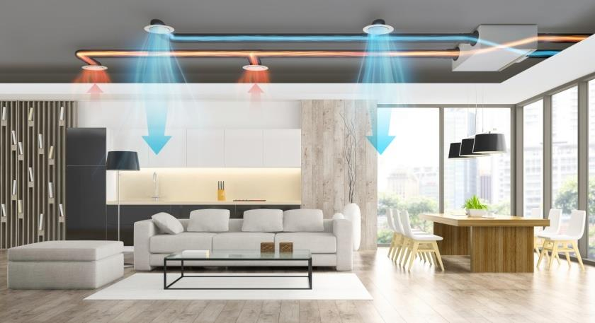

온대기후 맟춤형 도시 인프라(1)
온대기후
기상정보
온대기후 맞춤형
도시 인프라(1)
온대기후 맞춤형
도시 인프라(2)

원인: 사막 또는 공장으로 인한 먼지나 오염물질이
바람을 타고 올 때를 준비하기 위해
-> 기계적 환기시스템
- 건물 내부의 공기 순환을 자동으로 제어하는 시스템
- 공기를 필터링하고, 실내 공기를 신선한 외부 공기로 교환
특히 습도와 온도 조절이 필요한 경우 유리함